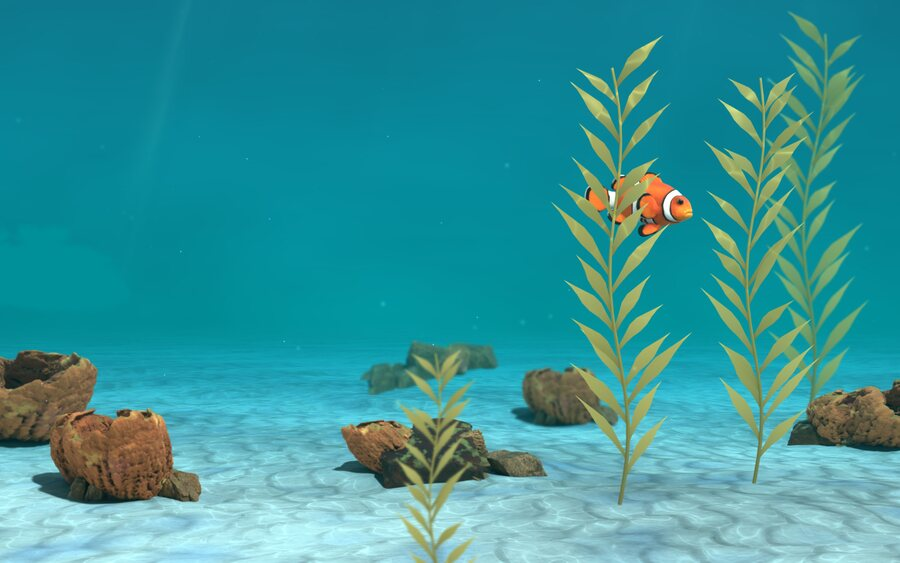
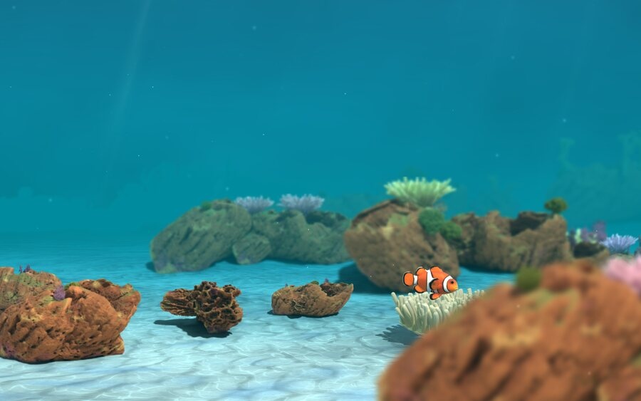
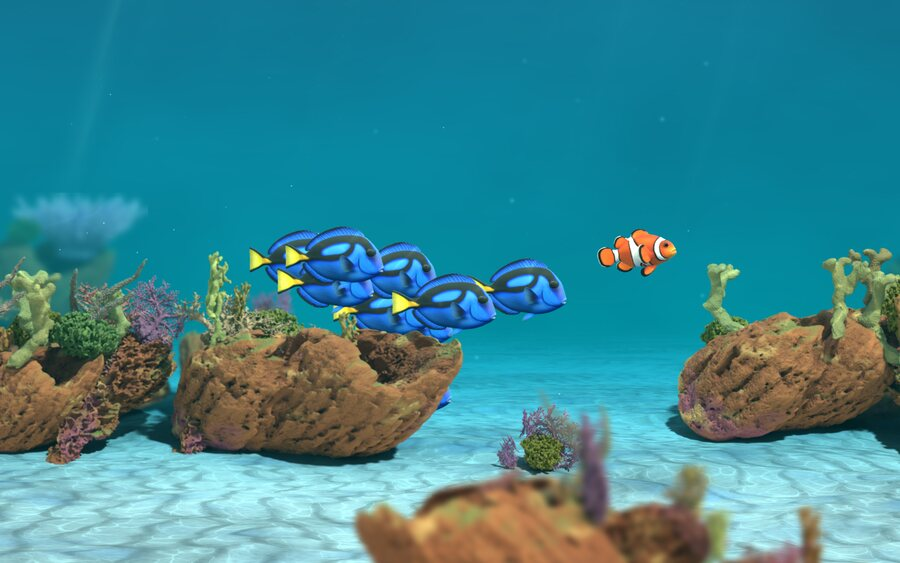

A clownfish lives behind your windows.
A living coral reef for your Mac desktop. Its day follows yours.
Its day follows yours.
Rosy dawns, bright turquoise days, orange sunsets, blue nights where the water glows.
Set it free Full Ocean
Your fish travels through nine habitats, eats plankton, rests in its anemone, slowly grows, and meets schools of blue tangs.



Light on your Mac.
Lower frame rate on battery, pauses when windows cover the desktop, live CPU and memory use in Settings. One ocean across all your displays. No ads, no subscription.